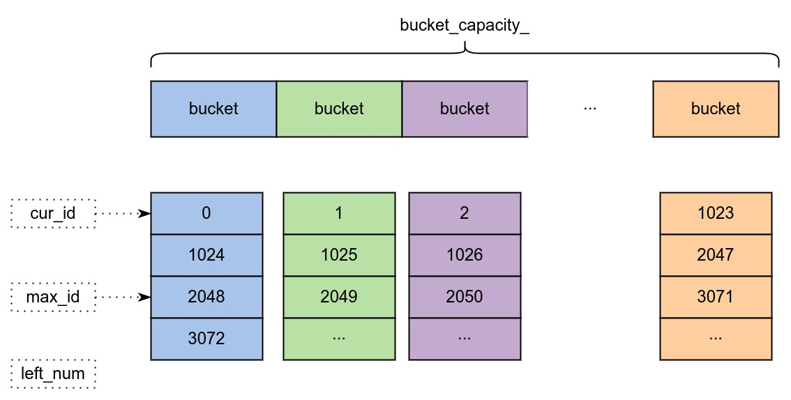

Ch03-AmDB 之 ID 生成器
December 3, 2022
1. 接口 #
Status AllocateID(IDType type, const std::string& key, uint64_t* id);
Status BatchAllocateID(IDType type, const std::string& key, size_t batch_size, std::vector<uint64_t>* id_list);
2. ID 生成器分类 #
| 分类 | 说明 |
|---|---|
| IDType::Database | 生成 Database 级别的 ID |
| IDType::Table | 生成 Table 级别的 ID |
| IDType::Column | 生成 Column 级别的 ID |
3. ID 生成器原理 #
3.1 基本原理 #

这里以 IDType::Column 类型的生成器为例，cur_id 表示当前已经分配的 id，max_id 表示当前能分配的最大 id，left_num 表示能分配的 id 个数。
假如需要分配 n 个 id 的时候，首先将传进来的 key 取 hash 计算出具体的 bucket，然后判断 left_num 是否大于 n？
- 如果大于则表示足够分配，那么就将 [cur_id+1,cur_id+n+1] 的所有数值返回。
- 如果小于则表示不足够分配，那么重新计算当前 bucket 的 max_id 和 left_num，分配好之后将 [cur_id+1,cur_id+n+1] 返回。
3.2 计算公式 #
// fetch_num 为需要获取的 id 数量
new_max_id = old_max_id + bucket_capacity_ * fetch_num
left_num = fetch_num